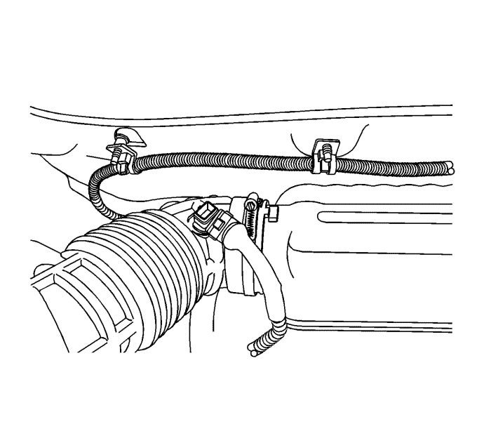
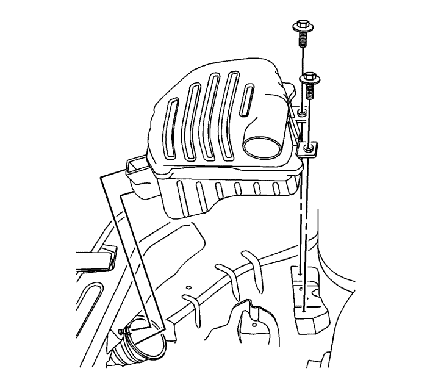
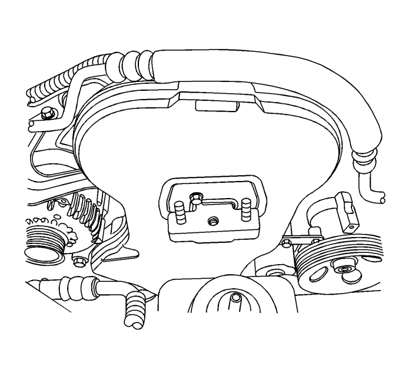
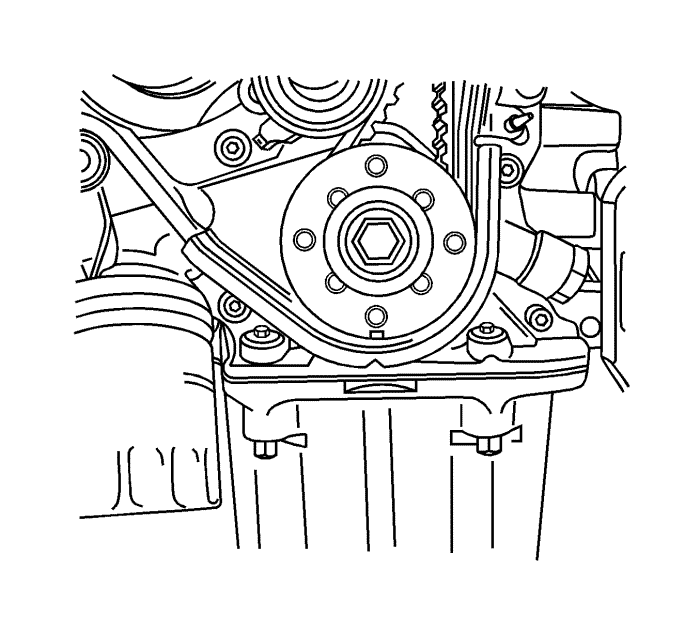

Inspección y ajuste de la correa de distribución — LE5
Advertencia: Consulte Advertencia sobre la desconexión de la batería en la sección Prólogo

- Desconecte el cable de batería negativo.
- Desenchufe el conector del sensor de temperatura del aire de admisión (IAT).

- Extraiga el conjunto del filtro de aire. Consultar Sustitución del conjunto del filtro de aire : LE5 o LE9 → LD9 .
- Desmonte la rueda delantera derecha. Consultar Desmontaje y montaje de la rueda y el neumático .
- Desmonte el protector delantero del motor en la posición de la rueda delantera derecha.

- Desmonte la correa de accionamiento de los accesorios. Consultar Sustitución de la correa de accionamiento : LE5 .
- Desmonte la polea del cigüeñal.
- Desmonte el conjunto de fijación del motor. Consultar Sustitución del soporte del motor

- Quite los tornillos de la tapa delantera de la correa de distribución.
- Desmonte la tapa delantera de la correa de distribución.

- Haga girar el cigüeñal al menos una vuelta completa en el sentido de las agujas del reloj utilizando el tornillo del piñón del cigüeñal.
- Alinee la marca del piñón del cigüeñal con la muesca de la base de la tapa trasera de la correa de distribución.
- Alinee las marcas de la puesta a punto de los piñones de los árboles de levas. Emplee la marca del piñón del árbol de levas de escape para este piñón y la del piñón del árbol de levas de admisión para dicho piñón de admisión, ya que no son intercambiables.
- Afloje el tornillo del tensor automático. Para reducir la tensión de la correa, haga girar la lengüeta para llave hexagonal en sentido contrario al de las agujas del reloj.
- Haga girar la lengüeta para llave hexagonal del tensor automático en el sentido de las agujas del reloj hasta que el indicador del brazo de ajuste de dicho tensor quede alineado con la muesca del soporte del mismo.
- Apriete el tornillo del tensor automático.
- Haga girar el cigüeñal dos vueltas completas en el sentido de las agujas del reloj utilizando el tornillo del piñón.
- Compruebe el indicador del tensor automático.
Precaución: Consulte Precaución con las fijaciones en la sección Prólogo
- Cuando el indicador del brazo de ajuste del tensor automático de la correa de distribución quede alineado con la muesca existente en el soporte de dicho tensor, la correa estará tensada correctamente. Apriete el tornillo a 25 N·m (18 lib. pie).
- Monte la tapa delantera de la correa de distribución y apriete los tornillos a 6 N·m (53 lib. pulg.).

- Monte la polea del cigüeñal y apriete el perno a 23 N·m (17 lib. pie).
- Coloque el soporte de fijación del motor. Consultar Sustitución del soporte del motor
- Monte la correa de accionamiento de los accesorios. Consultar Sustitución de la correa de accionamiento : LE5 .
- Monte el protector delantero del motor.
- Monte la rueda delantera derecha. Consultar Desmontaje y montaje de la rueda y el neumático .
- Monte el conjunto limpiador y apriete los tornillos del alojamiento a 6 N·m (53 lib. pulg.). Consultar Sustitución del conjunto del filtro de aire : LE5 o LE9 → LD9 .
- Enchufe el conector del IAT.
- Conecte el cable negativo de la batería.
| © Copyright Chevrolet Europe. All rights reserved |